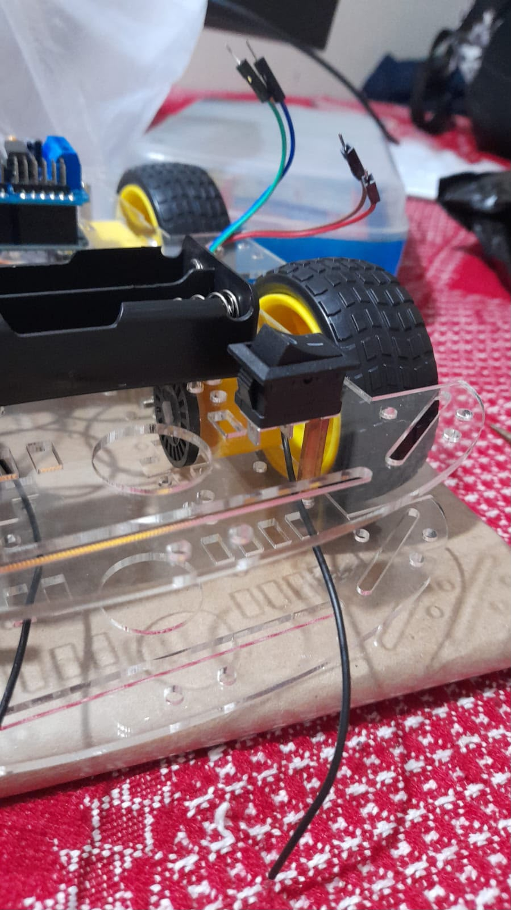
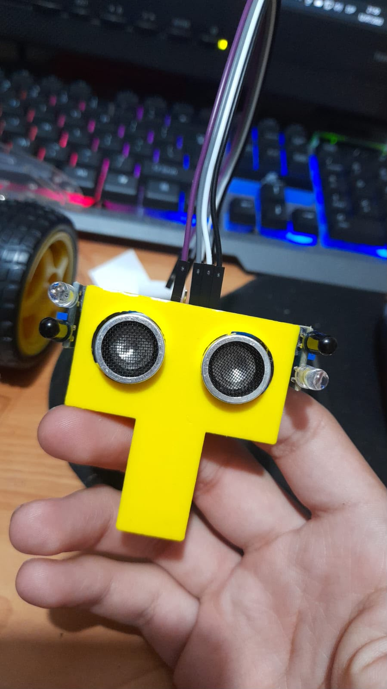
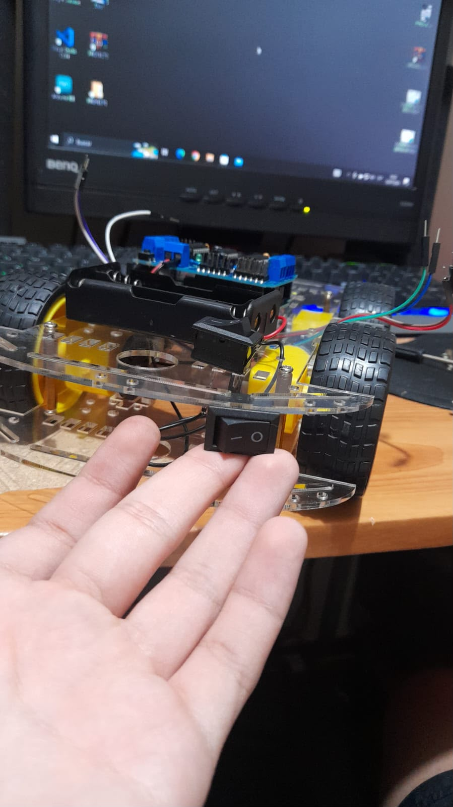
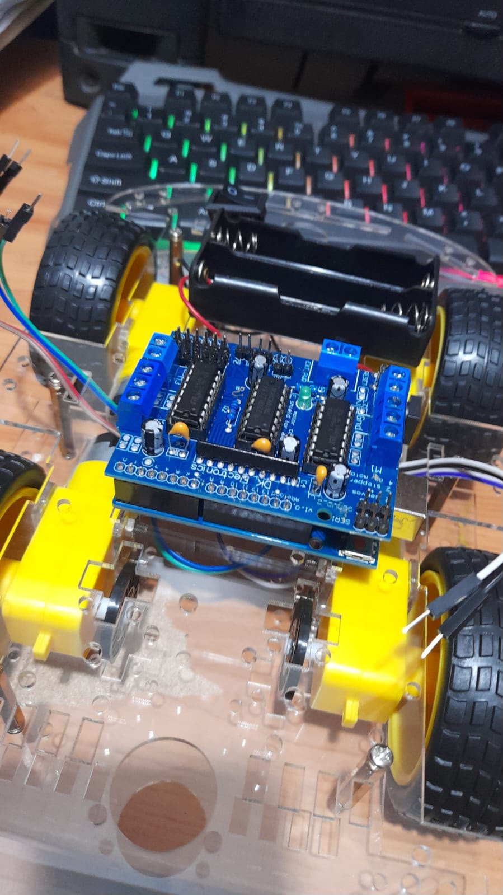
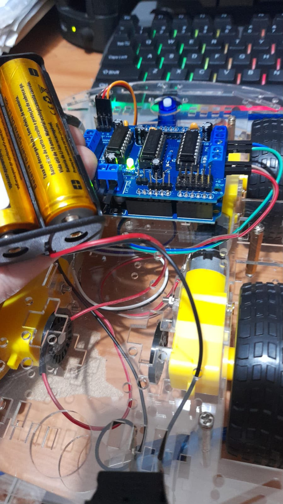
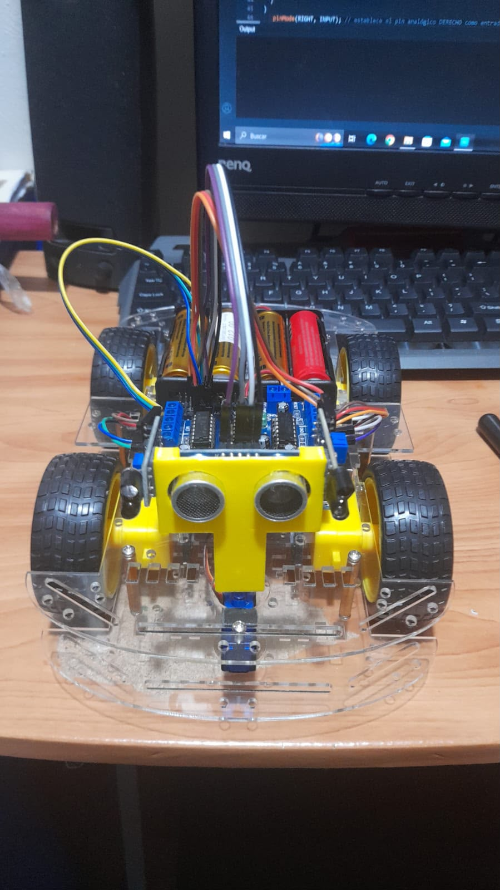

Proyecto de Electrónica Digital
Robot móvil de cuatro ruedas basado en Arduino que detecta una mano con sensores infrarrojos y un sensor ultrasónico, y responde moviendo sus motores.
Ver cómo funcionaEl proyecto consiste en el diseño y construcción de un robot móvil, basado en una tarjeta Arduino, capaz de detectar una mano y responder a sus movimientos.
Los sensores entregan señales de entrada que Arduino procesa con una lógica previamente programada. Según lo detectado, el robot puede avanzar, girar hacia un lado o detenerse, de modo que su movimiento tenga relación directa con la posición de la mano.
El proyecto aplica conceptos de electrónica digital: manejo de señales de entrada y salida, lógica de decisión y control de dispositivos.
Diseñar e implementar un robot móvil seguidor de mano utilizando Arduino, sensores y motores, capaz de detectar la posición de la mano y responder mediante el control de su movimiento.
Resumen de los conceptos principales que se usan en el robot.
Estudia máquinas que se desplazan combinando elementos mecánicos, electrónicos y de programación: actuadores, sensores y una unidad de control.
Plataforma basada en un microcontrolador. Recibe datos de los sensores y genera señales de control para motores y servomotor. Se usa una placa Arduino UNO.
Usan radiación infrarroja para detectar presencia. Se colocan dos (izquierdo y derecho) para saber hacia qué lado está la mano.
Emite una señal y mide el tiempo del eco para calcular la distancia aproximada a la mano.
Gira el sensor ultrasónico a distintos ángulos para hacer un barrido. No mueve las ruedas.
Cuatro motores mueven las ruedas. Como piden más corriente que un pin de Arduino, se usa un controlador (driver) de motores.
Cada estado de los sensores (detecta / no detecta) se combina con la distancia para elegir una acción mediante condicionales.
Una alimentación estable evita reinicios del Arduino. Cada componente se prueba por separado y luego se calibra el conjunto.
Listado de componentes electrónicos usados en el prototipo.
| Cant. | Componente | Función dentro del proyecto |
|---|---|---|
| 1 | Arduino | Unidad principal de control y procesamiento |
| 2 | Sensores infrarrojos | Detección de la mano |
| 1 | Sensor ultrasónico | Medición de distancia |
| 1 | Servomotor | Orientación del sensor ultrasónico |
| 4 | Motores DC | Movimiento de las ruedas |
| 4 | Ruedas | Desplazamiento del robot |
| 1 | Controlador / driver de motores | Control de los motores DC |
| 1 | Placa de conexiones | Realización de conexiones electrónicas |
| — | Cables jumper | Interconexión de los componentes |
| 1 | Fuente o batería | Alimentación eléctrica del sistema |
Nota: el multímetro sirve para comprobar continuidad y tensiones de alimentación antes de encender el robot.
El robot se analiza como un sistema de entradas, procesamiento y salidas.
Los cuatro motores van en la parte inferior del chasis. Arriba se colocan el Arduino y el driver. Al frente va el servomotor con el sensor ultrasónico encima. El peso debe quedar equilibrado y los cables lejos de las ruedas.
Cada motor mueve una rueda, lo que da tracción en las cuatro. Arduino envía señales al driver, y el driver maneja la corriente de los motores.
Dos sensores en la parte frontal. Según cuál detecte la mano, Arduino ejecuta una acción distinta.
El servomotor cambia la orientación del sensor para medir en varias direcciones y ampliar la percepción del robot.
Cada combinación de sensores produce una acción. Prueba la lógica con este simulador.
Los valores de distancia del simulador son ejemplos. En el robot real se determinan con pruebas y calibración.
// Lectura de sensores en cada ciclo
si (mano demasiado cerca) → detenerse
si no, si (IR izquierdo detecta) → girar a la izquierda
si no, si (IR derecho detecta) → girar a la derecha
si no, si (mano al frente) → avanzar
si no → detenerse
Con esto se aplican entradas digitales, salidas digitales, estados lógicos y decisiones con condicionales.





